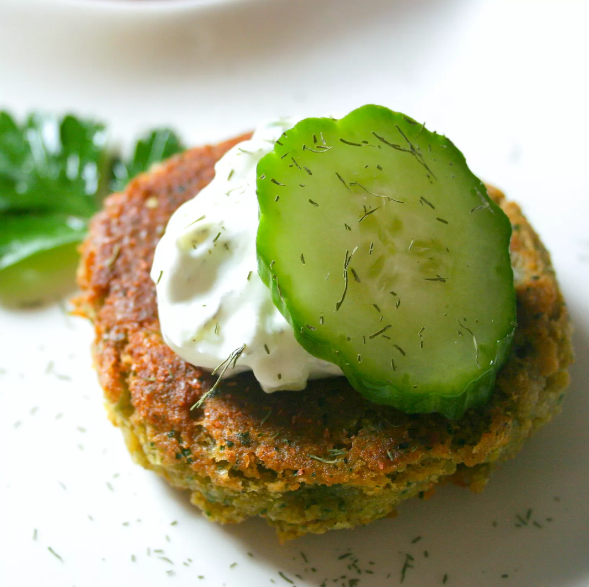

Sean's Falafel and Cucumber Sauce

"This falafel sauce recipe is great. Everyone that I have made it for loves it. Yum!" - Sean.
Ingredients
Cucumber Sauce
- 1 (6 ounce) container plain yogurt
- ½ cucumber - peeled, seeded, and finely chopped
- 1 tablespoon mayonnaise (Optional)
- 1 teaspoon dried dill weed
- salt and pepper to taste
Falafel
- 1 (15 ounce) can chickpeas (garbanzo beans), drained
- 1 onion, chopped
- ½ cup fresh parsley
- 2 cloves garlic, chopped
- 1 large egg
- 2 teaspoons ground cumin
- 1 teaspoon ground coriander
- 1 teaspoon salt
- 1 teaspoon lemon juice
- 1 teaspoon baking powder
- 1 dash black pepper
- 1 pinch cayenne pepper
- 1 tablespoon olive oil
- 1 cup dry bread crumbs, or as needed
- 2 cups oil, or as needed, for frying
- 2 pita breads, cut in half (Optional)
- 1 cup chopped tomatoes (Optional)
Steps
- Make sauce: Combine yogurt, cucumber, mayonnaise, dill, salt, and pepper in a small bowl; mix well. Chill in the refrigerator for at least 30 minutes.
- Make falafel: Mash chickpeas in a large bowl until thick and pasty; do not use a blender as the consistency will be too thin.
- Place onion, parsley, and garlic in a blender; blend until smooth. Stir into mashed chickpeas until well combined.
- Combine egg, cumin, coriander, salt, lemon juice, baking powder, black pepper, and cayenne in a small bowl. Stir into chickpea mixture along with olive oil. Mix in bread crumbs, a little at a time, until mixture holds together but is not sticky. Form mixture into 8 balls, then flatten into falafel patties.
- Heat 1 inch oil in a large skillet over medium-high heat. Fry falafels in hot oil until brown on both sides. Serve 2 falafels in each pita half, topped with chopped tomatoes and sauce.